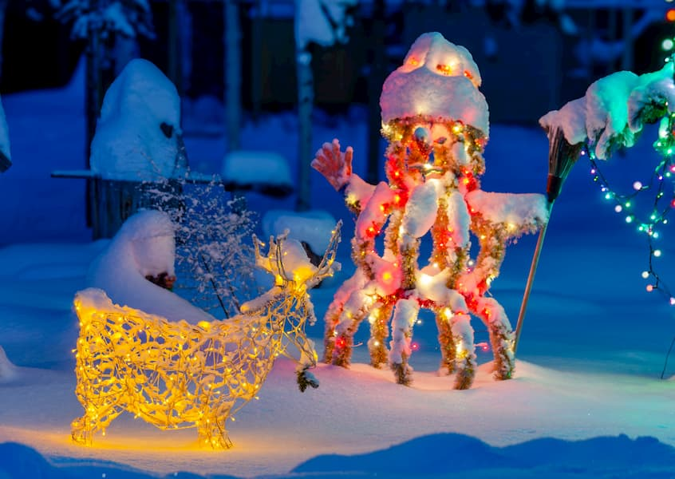

В лесу зажглась звезда: вечерняя магия живой ёлки «Типографии Лазурь»

Когда зажигаются гирлянды на нашей лесной ёлке, обычный вечер превращается в новогоднюю сказку.
У «Типографии Лазурь» есть своя, живая ёлка — она растёт прямо у входа, ведь мы работаем на опушке леса. И в этом году, как только опустились вечерние сумерки, на ней зажглись огни. Недавние фотографии показывают, как преображается наша лесная красавица с наступлением темноты: пушистые ветви, припорошенные инеем, мягко светятся в лучах гирлянд, создавая уютную и таинственную атмосферу.
«Это наш маленький ритуал, — делится впечатлениями директор. — День завершён, а мы зажигаем огни для всех, кто ещё в пути, и для себя, как символ тепла и дома. То, что наша ёлка живая и растёт здесь много лет, делает этот свет особенным — он не временный, он часть этого места».
Эти вечерние огни — наш тихий привет из леса всем клиентам и партнёрам. Мы приглашаем вас не только днём, но и в ранний вечер — возможно, вы успеете застать этот миг, когда загораются гирлянды и обычная дорога к типографии ненадолго становится дорогой в новогоднюю сказку.

«Типография Лазурь» ждёт вас за праздничными заказами. А наша ёлка, как верный страж, будет светить вам в оконце.